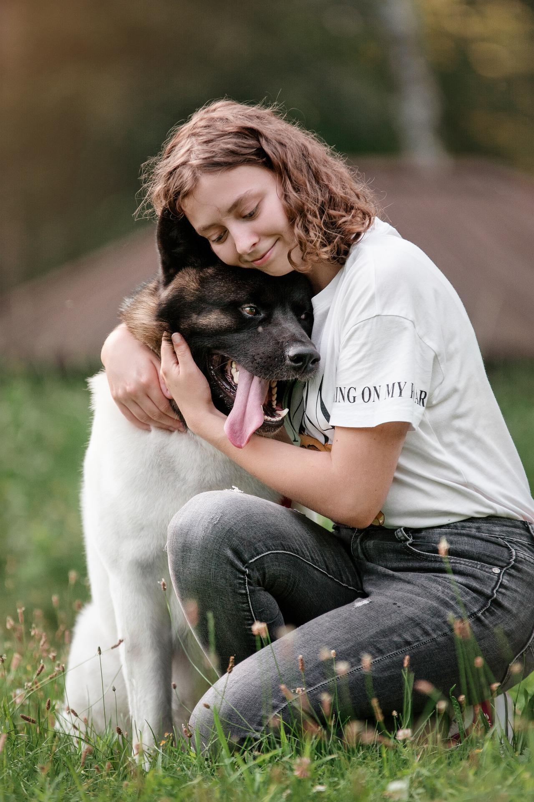

Nós somos um time de pessoas que amamamos PETs, principalmente nosso pequenos companheiros, os cães.
Nós amamamos nosso pequenos amigos, e temos o objetivo de sempre deixar nossos companheiros saudáveis, e para isso, uma boa caminhada é sempre necessário. Entretanto, nem todos nós temos o tempo e a rotina necessária para fazer caminhadas constantes com nossos PETs, e por isso DDW foi criada.
